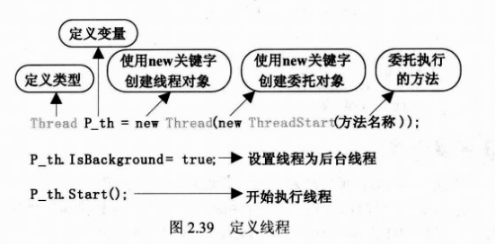

1，使用多线程需要引入System.Threading.
源码：using System;
using System.Collections.Generic;
using System.ComponentModel;
using System.Data;
using System.Drawing;
using System.Linq;
using System.Text;
using System.Windows.Forms;
namespace NumGame
{
public partial class Frm_Main : Form
{
public Frm_Main()
{
InitializeComponent();
}
System.Threading.Thread G_th;
//定义线程
Random G_random =
new Random();
//定义随机数对象
int G_int_num;
//定义变量用于存放存机数
private void btn_begin_Click(
object sender, EventArgs e)
{
RemoveControl();
//清空所有无用对象
int p_int_x =
10;
//X坐标初始值为10
int p_int_y =
60;
//Y坐标初始值为60
for (
int i =
0; i <
100; i++)
//添加100个按钮
{
Button bt =
new Button();
//创建button按钮
bt.Text = (i +
1).
ToString();
//设置button按钮的文本值
bt.Name = (i +
1).
ToString();
//设置button按钮的Name属性
bt.Width =
35;
//设置button按钮的宽
bt.Height =
35;
//设置button按钮的高
bt.Location =
new Point(p_int_x, p_int_y);
//设置button按钮的位置
bt.Click +=
new EventHandler(bt_Click);
//定义button按钮的事件
p_int_x +=
36;
//设置下一个按钮的位置
if ((i +
1) %
10 ==
0)
//设置换行
{
p_int_x =
10;
//换行后重新设置X坐标
p_int_y +=
36;
//换行后重新设置Y坐标
}
Controls.
Add(bt);
//将button按钮放入窗体控件集合中
}
G_th =
new System.Threading.
Thread(
//新建一条线程
delegate()
//使用匿名方法
{
int P_int_count =
0;
//初始化计数器
while (
true)
//开始无限循环
{
P_int_count =
//计数器累加
++P_int_count >
100000000 ?
0 : P_int_count;
this.
Invoke(
//将代码交给主线程执行
(MethodInvoker)
delegate//使用匿名方法
{
lb_time.Text =
//窗体中显示计数
P_int_count.
ToString();
});
System.Threading.Thread.
Sleep(
1000);
//线程睡眠1秒
}
});
G_th.IsBackground =
true;
//设置线程为后台线程
G_th.
Start();
//开始执行线程
G_int_num = G_random.
Next(
1,
100);
//生成随机数
btn_begin.Enabled =
false;
//停用开始按钮
}
void bt_Click(
object sender, EventArgs e)
{
Control P_control = sender
as Control;
//将sender转换为control类型对象
if (
int.
Parse(P_control.Name) > G_int_num)
{
P_control.BackColor = Color.Red;
//设置按钮背景为红色
P_control.Enabled =
false;
//设置按钮停用
P_control.Text =
"大";
//更改按钮文本
}
if (
int.
Parse(P_control.Name) < G_int_num)
{
P_control.BackColor = Color.Red;
//设置按钮背景为红色
P_control.Enabled =
false;
//设置按钮停用
P_control.Text =
"小";
//更改按钮文本
}
if (
int.
Parse(P_control.Name) == G_int_num)
{
G_th.
Abort();
//终止计数线程
MessageBox.
Show(
string.
Format(
//显示游戏信息
"恭喜你猜对了！共猜了{0}次 用时{1}秒",
GetCount(),lb_time.Text),
"恭喜！");
btn_begin.Enabled =
true;
//启用开始按钮
}
}
/// <summary>
/// 用于查找窗体中Enable属性为False控件的数量
/// 用于计算玩家有多少次没有猜中
/// </summary>
/// <returns>返回没有猜中数量</returns>
string GetCount()
{
int P_int_temp =
0;
//初始化计数器
foreach (Control c
in Controls)
//遍历控件集合
{
if (!c.Enabled) P_int_temp++;
//计数器累加
}
return P_int_temp.
ToString();
//返回计数器信息
}
/// <summary>
/// 用于清空窗体中动态生成的按钮
/// </summary>
void RemoveControl()
{
for (
int i =
0; i <
100; i++)
//开始遍历100个按钮
{
if (Controls.
ContainsKey(
//窗体中是否有此按钮
(i+
1).
ToString()))
{
for (
int j =
0; j < Controls.Count; j++)
//遍历窗体控件集合
{
if (Controls[j].Name ==
//是否查找到按钮
(i +
1).
ToString())
{
Controls.
RemoveAt(j);
//删除指定按钮
break;
}
}
}
}
}
private void Frm_Main_FormClosing(
object sender, FormClosingEventArgs e)
{
Environment.
Exit(
0);
//强行关闭窗体
}
}
}